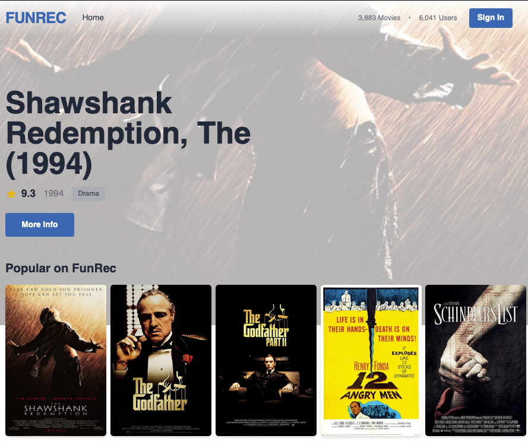
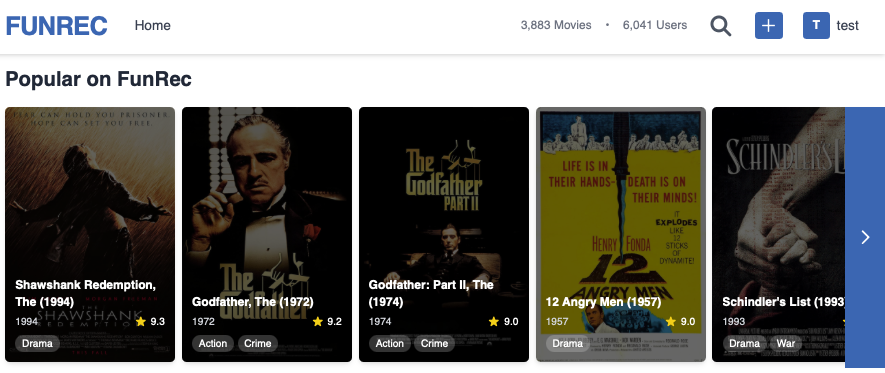
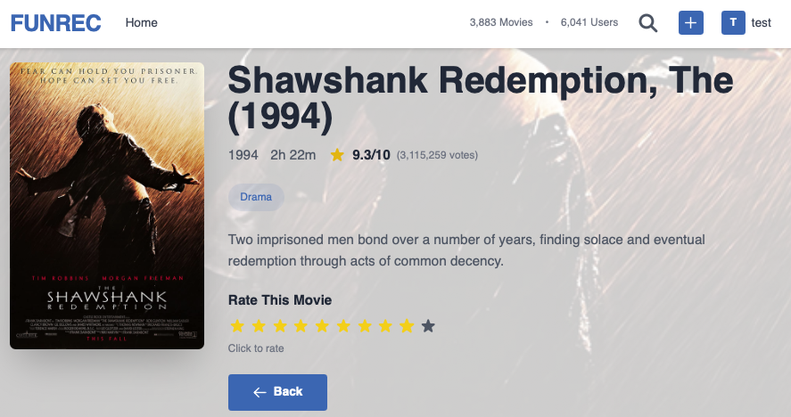
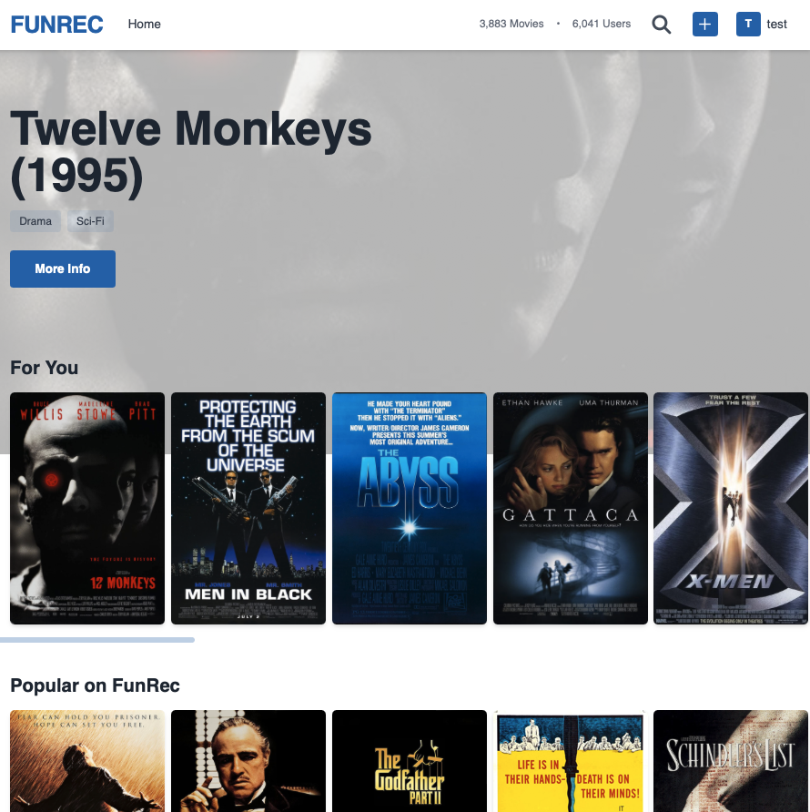
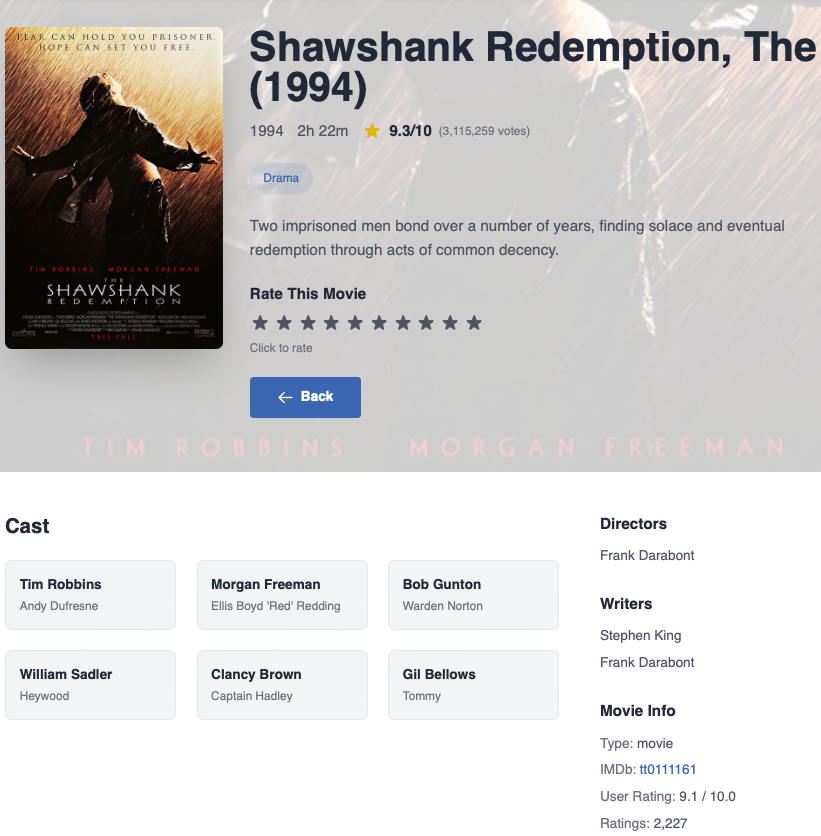
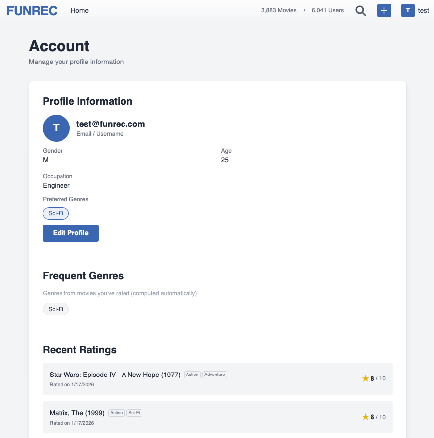
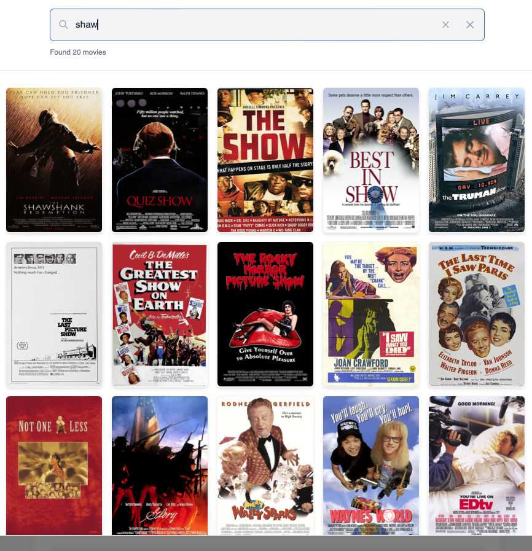

10.5. 前端与交互¶
在前面的章节中，我们完成了离线流程和在线流程的构建。离线流程训练好了召回模型和排序模型，在线流程实现了从用户请求到推荐结果的完整链路。本节将介绍如何构建前端应用，将推荐结果呈现给用户，并处理用户的各种交互行为。
10.5.1. 前端概述¶
前端应用是用户与推荐系统交互的入口。用户通过前端浏览电影、查看推荐、进行搜索、提交评分。这些行为数据会被收集并反馈到后端，影响未来的推荐结果。因此，前端不仅是展示层，也是数据采集层。
本项目采用以下技术栈构建前端：
技术 |
用途 |
|---|---|
Vue.js 3 |
渐进式 JavaScript 框架，使用 Composition API |
Tailwind CSS |
CSS 框架，通过类名快速实现样式 |
Pinia |
状态管理库，管理用户认证状态 |
Vue Router |
路由管理，处理页面导航 |
Axios |
HTTP 客户端，与后端 API 通信 |
前端应用包含以下核心页面。
首页（Home）：展示个性化推荐、热门电影、分类电影列表
电影详情页（MovieDetail）：展示电影信息、演职人员，支持用户评分
认证页（Auth）：处理用户登录和注册
个人中心（Profile）：展示用户信息、评分历史、偏好设置
搜索功能（SearchOverlay）：全局搜索入口，支持实时搜索
{kind=link}

图10.5.1 首页¶
10.5.2. 项目结构与路由配置¶
10.5.2.1. 目录结构¶
前端代码位于 web_project/frontend/ 目录下：
frontend/src/
├── App.vue # 根组件
├── main.js # 应用入口
├── components/ # 可复用组件
│ ├── Header.vue # 顶部导航栏
│ ├── MovieCard.vue # 电影卡片
│ ├── MovieRow.vue # 电影横向列表
│ ├── SearchOverlay.vue# 搜索弹窗
│ └── StarRating.vue # 评分组件
├── views/ # 页面组件
│ ├── Home.vue # 首页
│ ├── MovieDetail.vue # 电影详情
│ ├── Auth.vue # 登录/注册
│ └── Profile.vue # 个人中心
├── router/index.js # 路由配置
├── services/api.js # API 服务封装
└── stores/auth.js # 用户状态管理
components/ 存放可复用组件，views/
存放页面级组件，services/ 存放 API 调用逻辑，stores/
存放状态管理逻辑。
10.5.2.2. 路由与权限控制¶
本节代码位于
src/router/index.js
Vue Router 是 Vue.js 的官方路由库，负责管理 URL 与页面组件的对应关系。用户访问不同的 URL 时，Router 会渲染对应的组件。
路由配置定义了这种映射关系。meta
字段是自定义的元信息，我们用它来标记页面的访问权限：
const routes = [
{ path: '/', name: 'Home', component: Home },
{ path: '/movie/:id', name: 'MovieDetail', component: MovieDetail, props: true },
{ path: '/auth', name: 'Auth', component: Auth, meta: { guest: true } },
{ path: '/profile', name: 'Profile', component: Profile, meta: { requiresAuth: true } },
]
Vue Router
提供了导航守卫机制，可以在路由跳转前执行检查逻辑。beforeEach
会在每次导航前被调用，我们在这里实现权限控制：
router.beforeEach((to, from, next) => {
const token = localStorage.getItem('token')
if (to.meta.requiresAuth && !token) {
next('/auth') // 未登录用户重定向到登录页
} else if (to.meta.guest && token) {
next('/') // 已登录用户不能访问登录页
} else {
next()
}
})
这种设计将权限逻辑集中在路由层，各个页面组件不需要单独处理登录状态检查。
{kind=link}
图10.5.2 顶部导航栏¶
10.5.3. 核心组件设计¶
Vue 的组件化开发允许我们将 UI 拆分为独立、可复用的部分。本项目设计了几个核心组件，它们在多个页面中被使用。
10.5.3.1. 电影卡片组件¶
本节代码位于
src/components/MovieCard.vue
MovieCard 是最基础的展示单元。组件接收 movie 对象和 width
参数，显示电影海报、标题、年份和评分。
设计要点：
整个卡片可点击：使用 Vue Router 提供的
<router-link>组件包裹，点击后跳转到电影详情页懒加载图片：使用 HTML5 的
loading="lazy"属性，图片进入视口时才加载，减少初始加载时间图片加载失败处理：通过
@error事件监听加载失败，显示占位图悬停效果：鼠标悬停时显示详细信息。Tailwind CSS 的
group和group-hover类允许父元素悬停时改变子元素样式
{kind=link}
图10.5.3 电影卡片 左：正常状态，右：鼠标悬停状态¶
10.5.3.2. 电影横向列表¶
本节代码位于
src/components/MovieRow.vue
MovieRow 组件将多个 MovieCard 组织成可横向滚动的列表，类似
Netflix 的电影行效果。
主要功能：
骨架屏：数据加载时显示灰色占位块，避免页面跳动
横向滚动：移动端支持手势滑动，桌面端显示左右箭头按钮
按需显示箭头：根据滚动位置动态控制箭头的显示
在 Vue 3 中，ref 不仅可以存储普通值，还可以引用 DOM
元素。我们用它获取滚动容器的引用，然后根据滚动位置判断是否显示箭头：
import { ref } from 'vue'
const scrollContainer = ref(null) // 引用滚动容器 DOM 元素
const showLeftArrow = ref(false)
const showRightArrow = ref(true)
const updateArrows = () => {
// scrollContainer.value 是实际的 DOM 元素
const { scrollLeft, scrollWidth, clientWidth } = scrollContainer.value
showLeftArrow.value = scrollLeft > 0
showRightArrow.value = scrollLeft < scrollWidth - clientWidth - 10
}
已经滚动到最左边时隐藏左箭头，滚动到最右边时隐藏右箭头。
{kind=link}

图10.5.4 电影横向列表¶
10.5.3.3. 评分组件¶
本节代码位于
src/components/StarRating.vue
StarRating 组件实现了 10 分制的星级评分功能。
交互设计：
悬停预览：鼠标悬停在某颗星星上时，该星星及其左边的星星变成黄色
点击评分：点击星星提交评分，调用后端 API
删除评分：已评分的用户可以删除自己的评分
权限控制：未登录用户看到的是登录提示
组件内部维护两个状态：hoverRating
记录鼠标悬停的位置，userRating
记录用户已保存的评分。星星颜色根据这两个状态决定：
const hoverRating = ref(0) // 鼠标悬停位置，0 表示未悬停
const userRating = ref(0) // 用户已保存的评分
const getStarClass = (star) => {
// 悬停时优先显示悬停效果，否则显示已保存的评分
const currentRating = hoverRating.value || userRating.value
return star <= currentRating ? 'text-yellow-400' : 'text-gray-600'
}
{kind=link}

图10.5.5 评分组件¶
10.5.3.4. 首页¶
本节代码位于
src/views/Home.vue
首页分为两个部分：顶部的 Hero Banner 展示精选电影，下方是多个电影行。
首页需要根据用户的登录状态决定是否加载个性化推荐。在 Vue 3 的
Composition API 中，我们使用 ref 定义响应式变量，使用 watch
监听状态变化：
import { ref, watch, onMounted } from 'vue'
import { useAuthStore } from '../stores/auth'
import { movieApi } from '../services/api'
const authStore = useAuthStore() // 获取用户状态
const forYouMovies = ref([]) // 个性化推荐列表
const loadingForYou = ref(false) // 加载状态
const fetchRecommendations = async () => {
if (!authStore.isAuthenticated) return
loadingForYou.value = true
try {
const response = await movieApi.getRecommendations(authStore.user.user_id)
forYouMovies.value = response.data
} finally {
loadingForYou.value = false
}
}
// watch 监听 authStore.isAuthenticated 的变化
// 用户登录后自动加载推荐，登出后清空列表
watch(() => authStore.isAuthenticated, (isAuthenticated) => {
if (isAuthenticated) {
fetchRecommendations()
} else {
forYouMovies.value = []
}
})
设计要点：
条件渲染：个性化推荐行 “For You” 只对登录用户显示
响应式更新：用户登录后自动加载推荐，登出后清空推荐列表
Hero Banner 数据源：优先使用个性化推荐的第一部电影，没有则使用热门电影
个性化推荐调用了上一节实现的推荐 API，会执行完整的推荐流程：冷启动检测、多路召回、精准排序、多样性重排。
{kind=link}

图10.5.6 首页对比¶
10.5.3.5. 电影详情页¶
本节代码位于
src/views/MovieDetail.vue
电影详情页展示单部电影的完整信息，包括海报、简介、演职人员等。
Vue Router 提供了 useRoute 函数来获取当前路由信息，包括 URL
中的参数。当用户访问 /movie/123 时，route.params.id 的值就是
123。
数据加载采用容错策略：电影基本信息是必需的，演员和主创信息是可选的：
import { useRoute } from 'vue-router'
const route = useRoute() // 获取当前路由
const fetchMovieDetails = async () => {
// 从 URL 获取电影 ID，如 /movie/123 中的 123
const movieId = route.params.id
// 获取电影基本信息（必需）
const movieResponse = await movieApi.getMovie(movieId)
movie.value = movieResponse.data
// 获取演员（可选，失败不影响页面显示）
try {
const castResponse = await movieApi.getMovieCast(movieId)
cast.value = castResponse.data.cast
} catch (error) {
// 没有演员数据，静默处理
}
}
用户评分后会触发回调，重新加载电影信息以更新统计数据：
const handleRated = (rating) => {
fetchMovieDetails() // 刷新以显示更新后的平均评分
}
用户的评分行为会被后端记录，影响该用户未来的推荐结果。
{kind=link}

图10.5.7 电影详情页¶
10.5.4. API 集成与状态管理¶
10.5.4.1. API 服务封装¶
本节代码位于
src/services/api.js
前端与后端的通信统一管理在此文件中。我们使用 Axios 库发送 HTTP 请求。Axios 是一个流行的 HTTP 客户端，支持 Promise、请求拦截、响应拦截等功能。
首先创建一个 Axios 实例，配置基础 URL 和超时时间：
import axios from 'axios'
const API_BASE_URL = import.meta.env.VITE_API_URL || 'http://localhost:8000'
const api = axios.create({
baseURL: `${API_BASE_URL}/api`,
timeout: 10000,
})
API 调用按功能分组，封装成独立的对象。以推荐 API 为例：
export const movieApi = {
getRecommendations(userId, topK = 20) {
const token = localStorage.getItem('token')
return api.post('/recommendations/recommend',
{ user_id: userId },
{ headers: { 'Authorization': `Bearer ${token}` }, params: { top_k: topK } }
).then(response => ({ ...response, data: response.data.items }))
},
// 其他方法...
}
需要用户认证的 API 会从 localStorage 读取 token
并添加到请求头中。这种设计将认证逻辑集中在 API 层。
10.5.4.2. 用户状态管理¶
本节代码位于
src/stores/auth.js
用户的登录状态需要在多个组件之间共享：首页需要根据登录状态决定是否显示个性化推荐，详情页需要判断用户能否评分，导航栏需要显示用户信息或登录按钮。如果通过 props 层层传递，代码会变得繁琐。
Pinia 是 Vue 官方推荐的状态管理库，用于管理跨组件共享的状态。它的核心概念是 Store：一个包含状态（state）、计算属性（getters）和方法（actions）的容器。任何组件都可以访问 Store 中的状态，状态变化时相关组件会自动更新。
我们使用 Pinia 管理用户认证状态：
import { defineStore } from 'pinia'
import { ref, computed } from 'vue'
export const useAuthStore = defineStore('auth', () => {
// 状态：从 localStorage 恢复，实现页面刷新后保持登录
const user = ref(JSON.parse(localStorage.getItem('user') || 'null'))
const token = ref(localStorage.getItem('token'))
// 计算属性：根据 user 和 token 判断是否已登录
const isAuthenticated = computed(() => !!token.value && !!user.value)
// 方法：登录
async function login(email, password) {
const response = await axios.post(`${API_BASE_URL}/api/auth/login`, { email, password })
token.value = response.data.access_token
localStorage.setItem('token', token.value)
await fetchProfile()
return { success: true }
}
// 方法：登出
function logout() {
user.value = null
token.value = null
localStorage.removeItem('token')
localStorage.removeItem('user')
}
return { user, token, isAuthenticated, login, logout }
})
defineStore 是 Pinia 提供的函数，用于定义一个 Store。第一个参数
'auth' 是 Store
的唯一标识符，第二个参数是一个返回状态和方法的函数。在组件中使用时，调用
useAuthStore() 即可获取这个 Store 的实例。
设计要点：
持久化：用户信息和 token 保存在
localStorage中，页面刷新后自动恢复登录状态响应式：
isAuthenticated是计算属性，当user或token变化时自动更新，依赖它的组件会重新渲染集中管理：登录、登出逻辑集中在 Store 中，各组件只需调用方法，不需要重复实现
{kind=link}

图10.5.8 个人中心¶
10.5.5. 搜索功能实现¶
本节代码位于
src/components/SearchOverlay.vue
搜索入口位于顶部导航栏，支持点击图标或按 Ctrl+K 快捷键打开。
实时搜索需要解决一个问题：用户每输入一个字符都触发搜索请求会造成大量无效请求。解决方案是防抖（debounce）：等用户停止输入一段时间后再发起请求。
我们使用 Vue 的 watch 函数监听搜索关键词的变化，配合 setTimeout
实现 300ms 的防抖：
import { ref, watch } from 'vue'
import { searchApi } from '../services/api'
const searchQuery = ref('') // 用户输入的关键词
const searchResults = ref([]) // 搜索结果
const isSearching = ref(false) // 是否正在搜索
let searchTimeout = null // 防抖定时器
watch(searchQuery, (newQuery) => {
// 用户每次输入都清除之前的定时器
if (searchTimeout) clearTimeout(searchTimeout)
if (!newQuery.trim()) {
searchResults.value = []
return
}
isSearching.value = true
// 300ms 后才真正发起请求
searchTimeout = setTimeout(async () => {
const results = await searchApi.searchMovies(newQuery.trim())
searchResults.value = results
isSearching.value = false
}, 300)
})
用户连续输入时，每次输入都会重置定时器，只有停止输入 300ms 后才会发起搜索请求。这样既保证了响应速度，又避免了过多的 API 调用。
搜索 API 调用后端的 Elasticsearch 服务，支持对电影标题、类型、简介的模糊匹配和相关性排序。
{kind=link}

图10.5.9 搜索功能¶
10.5.6. 用户认证与冷启动¶
本节代码位于
src/views/Auth.vue
用户认证页面包含登录和注册两个表单，通过 isSignup 变量切换显示。
注册表单中有一个“偏好类型”字段，让用户选择喜欢的电影类型。这与冷启动策略相关：新用户缺乏历史行为数据，推荐系统会优先根据用户设置的偏好类型进行推荐。
Vue 3 提供了 reactive 函数来创建响应式对象。与 ref
不同，reactive 适合管理包含多个字段的表单数据：
import { reactive, ref } from 'vue'
const isSignup = ref(false) // 控制显示登录还是注册表单
const signupForm = reactive({
email: '',
password: '',
gender: '',
age: '',
preferred_genres: [] // 偏好类型列表
})
// 点击类型标签时切换选中状态
const toggleGenre = (genreName) => {
const index = signupForm.preferred_genres.indexOf(genreName)
if (index === -1) {
signupForm.preferred_genres.push(genreName)
} else {
signupForm.preferred_genres.splice(index, 1)
}
}
用户在注册时选择的偏好类型会保存到数据库，供在线流程的冷启动模块使用。
{kind=link}
图10.5.10 注册页面¶